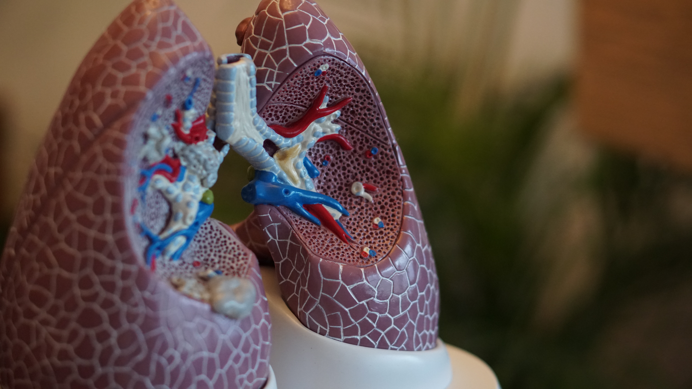

개인용도로 관련 지식을 쉽게 열어 볼 수 있는 홈페이지를 만들고자 함.
호흡기내과 분야에는 감염성 질환, 종양성 질환, 기도질환 및 기타 호흡기 질환으로 분류할 수 있다.

감염성 질환에는
폐결핵, 폐렴 등이 포함되며 종양성 질환에는 폐암, 양성폐종괴 등이 기도질환에는 천식 만성폐쇄성폐질환
등이 포함된다.
기타 호흡기 질환에는 이상의 질환에 포함되지 않는 간질성폐질환, sarcoidosis 등 주요질환군 3개에 속하지 않는
질환들을 묶어볼 수 있다.